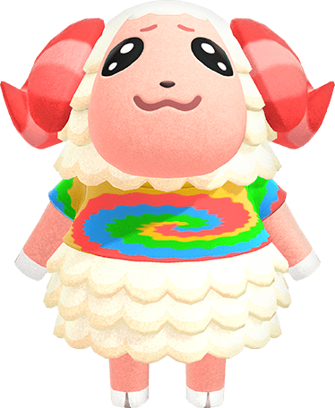

Bio!

About
Coming in at number 2 is the jock sheep Dom. He is a fairly new character. Aside from the fact that he is extremely rare to obtain, I love everything about him. His facial expressions are just out of this world. He is one of the most popular villagers in the game. Personally, I fell for his sad, but adorable, eyes.